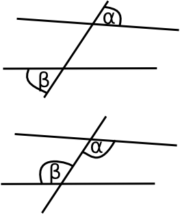
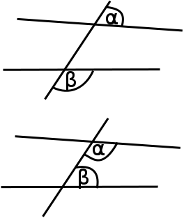

Paralleelseteks sirgeteks nimetatakse kahte tasandil olevat sirget, kui neil pole
ühist punkti ehk nad ei lõiku.
Põiknurkadeks nimetatakse kahte nurka, mis saadakse kahe sirge lõikamisel
kolmandaga ja kus nurkade haarad lõikajal on vastassuunalised ja teised
haarad asuvad lõikaja eri pooltel. Põiknurkade definitsiooni kirjeldab järgnev
joonis.

Lähisnurkadeks nimetatakse kahte nurka, mis saadakse kahe sirge lõikamisel
kolmandaga ja kus nurkade haarad lõikajal on vastassuunalised ja teised haarad
asuvad samal pool lõikajat. Lähisnurkade definitsiooni kirjeldab järgnev
joonis.

Paralleelsete sirgete omadusi: